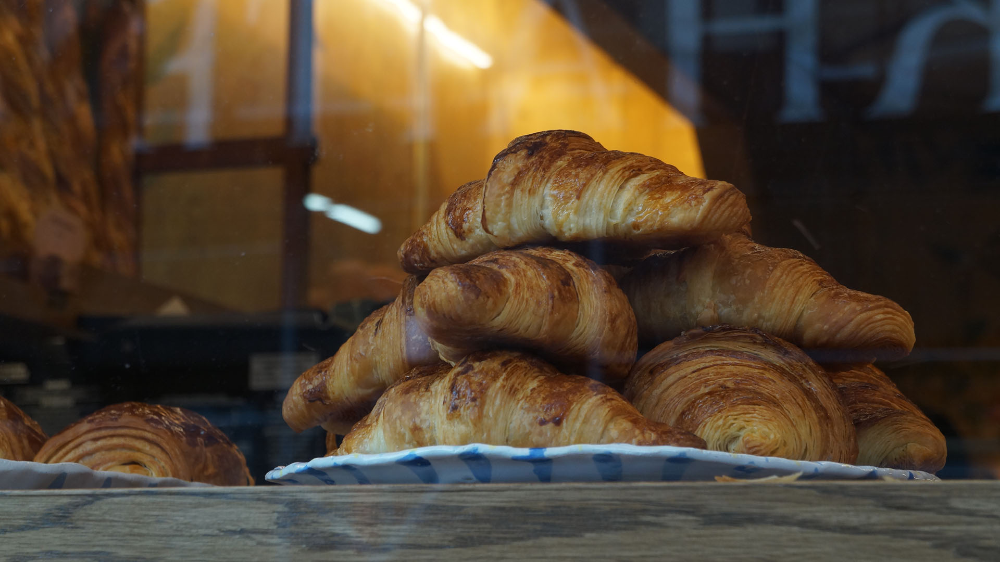

I used the golden spiral to position the center of the croissant pile to the right side of the photo. I believe that the format of the golden spiral perfectly reflects the golden spirals of the croissants themselves -- highlighting their deliciousness for all to admire.

week 2: Shallow Depth of Field